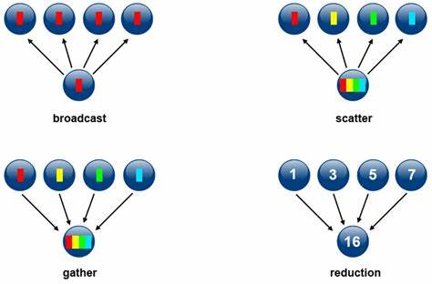

Introdução
Escrever bons sistemas distribuídos é uma tarefa que esbarra em diversos obstáculos, sendo a definição do que é um sistema distribuído e do que é ser "bom" neste contexto sendo nossos primeiros obstáculos.
O quê são Sistemas Distribuídos?
Para entendermos o que é um Sistema Distribuído, talvez seja mais fácil por um sistema não-distribuído ou, como os denominaremos aqui, sistema monolítico1.
Pense na maioria das aplicações que desenvolveu no curso até agora.
Mesmo que use diferentes bibliotecas e frameworks, toda a lógica de negócio, armazenamento e interface com usuário está contida em um mesmo executável e, quando executado, em um único processo.
Quando começou a programar este tipo de aplicação, o trabalho era basicamente colar blocos que se encaixavam perfeitamente, como Lego  , bastando importar a biblioteca correta e invocar suas funções.
, bastando importar a biblioteca correta e invocar suas funções.

O cenário deve ter mudado um pouco no decorrer do curso e com o início de sua atividade profissional, quando passou a usar muito mais bibliotecas de muitos desenvolvedores diferentes, em equipes com várias pessoas, aumentando consideravelmente a complexidade do desenvolvimento; o resultado, contudo, continua sendo um artefato só.

Programar sistemas distribuídos é dar outro salto em complexidade, pois frequentemente temos que usar peças que nunca foram pensadas para trabalharem juntas, nos forçando a usar um pouco de  ,
,  e fios, no caso, um tipo especial de fio conhecido como cabo de rede.
e fios, no caso, um tipo especial de fio conhecido como cabo de rede.

De fato, a principal característica de um sistema distribuído em relação a um não-distribuído, é a separação e disperção de suas partes em vários componentes independentes (processos, sensores, atuadores, etc), mas que se coordenam para execução de alguma tarefa. Assim, uma possível definição de Sistema Distribuído, que me agrada, é a seguinte:
Sistema Distribuído
Coleção de sistemas computacionais (software ou hardware), independentes mas com alguma forma de comunicação, que colaboram na execução de alguma tarefa.
No jargão da área, os componentes indepedentes são denominados nós. Frequentemente, cada nó do sistema será na prática um processo em um computador hospedeiro, um host, mas possivelmente múltiplos podem ser executados em um mesmo host; isso não muda o fato de que são independentes e poderiam ser distanciados.
Quanto à comunicação, Os nós podem compartilhar um espaço de endereçamento comum, seja por que estão co-locados no mesmo hospedeiro ou seja porquê tem acesso a alguma forma de memória compartilhada distribuída, que veremos mais adiante. Eles também podem se comunicar por mensagens trocadas via uma rede de comunicação, como a Internet.
Quanto à tarefa em comum, veja o seguinte exemplo, em que vários clientes trocam emails por meio de uma máquina com a qual se comunicam para entregar mensagens a serem enviadas e receber mensagens a eles destinadas; enquanto aguardam a entrega, mensagens são armazenadas em um Sistema Gerenciador de Banco de Dados (SGBD) em uma outra máquina, da qual os usuários não ttem ciência.
Neste exemplo, cada celular é um nó do sistema, assim como o processo responsável por receber os emails e encaminhá-los para o banco, bem como ler do banco e entregar para os destinatários. Neste exemplo, se o banco de dados para de funcionar, o processo na outra máquina passa a ser inútil, uma vez que não pode armazenar novas mensagens e nem recuperar mensagens já armazenadas. Neste contexto, uma definição mais cínica mas definitivamente realista é a de Leslie Lamport, que certa vez disse:
A distributed system is one in which the failure of a computer you didn't even know existed can render your own computer unusable.
Mas se esta é a realidade da programação distribuída, por quê fazê-lo?
Por quê desenvolvemos sistemas distribuídos?
Aqui diremos que um sistema é bom se está sempre funcional, mesmo que partes do sistema deixem de funcionar, com bom desempenho, i.e., respostas rápidas são dadas para o usuário, e com baixo custo, ou pelo menos tão baixo qunto possível para realizar a tarefa para a qual foi construído. Enquanto ainda subjetiva, nossa definção já nos permite estabelecer um pano de fundo para delinear as dificuldades de se implementar tais sistemas.
Pensemos em algumas aplicações distribuídas com as quais interagimos todos os dias e que por seu sucesso devem ser bons sistemas distribuídos: Alguns exemplos óbvios são
- Amazon.com,
- Facebook, e
- GMail.
Estes sistemas rodam em grandes data centers com milhares de máquinas, estando constantemente sujeitos fontes queimadas, discos corruptos, memórias defeituosas. Apesar disto, dificilmente estes serviços são reportados como fora do ar, são altamente responsíveis e, goste ou não do que fazem, são bem sucedidos porquê cumprem bem suas tarefas.
Enquanto a primeira vista possa se pensar que as técnicas usadas na construção destes sistemas devem ser muito especializadas e fora da realidade dos sistemas que nós desenvolvemos, a verdade não poderia ser mais longe disto. O fato é que computadores individuais tem capacidade limitada de processamento e armazenamento, mas nossa necessidade de poder computacional cresce exponencialmente.

Assim, precisamos crescer nosso poder computacional, mas aumentar a capacidade de um dispositivo (scale up) mesmo de forma linear tem custo exponencial.

O que nos resta então é agregar o poder computacional de diversos computadores "baratos" (scale out) para satisfazer nossas necessidades.

De fato, praticamente qualquer sistema de informação de sucesso necessitará aplicar as mesmas técnicas de computação distribuída e superar as mesmas barreiras para conseguir atender a número crescente de clientes (computacionais ou humanos), aumentar sua área de cobertura, e melhorar ou manter a qualidade do serviço que presta, mesmo que não chegue a escala dos exemplos acima.
Este último ponto, sobre qualidade do serviço, tem a ver com a capacidade de um sistema se manter no ar a despeito de problemas, isto é, de ser tolerante a falhas. Tolerância a falhas implica em redundância, em cópias, o que fatidicamente implica em distribuição e em Sistemas Distribuídos.
O remédio, contudo, é bem amargo: com muitos computadores conectados, vem a necessidade de coordená-los, de forma a agir de forma coerente, mesmo quando alguns deles falhem, e quanto mais computadores, maior é a probabilidade de que pelo menos um deles tenha uma CPU, disco, fonte, ou que quer que seja, falhando. E estejam certos, computadores falham o tempo todo! Nós precisamos então entender este ambiente, determinar e especificar várias de suas propriedades e comportamentos.
- Qual a probabilidade de um nó parar de funcionar?
- Como os hospedeiros, ou melhor, como os processos se comunicam? Via memória compartilhada ou por troca de mensagens?
- Se por mensagens, estas podem ser perdidas, atrasadas, corrompidas?
- Os relógios dos hospedeiros marcam o mesmo valor no mesmo instante, ou melhor, são sincronizados?
- Quanto tempo leva uma mensagem para sair de um nó A e chegar a um nó B?
- Há agentes que possam querer perturbar o sistema, por exemplo para ganhar acesso a mais recursos do que seria justo?
- Quais os padrões de acesso ao serviços, isto é, se aumentam à noite, diminuem no verão, etc?
Assim, definimos modelos computacionais, que nos permitem desenvolver algoritmos adequados aos diversos problemas que enfrentamos. Definido ou identificado o modelo computacional, podemos distribuir nosso sistema, isto é, dividir a computação/armazenamento em diversas máquinas, e coordenar suas ações para que sejam consistentes com a especificação, de forma a minimizar o tempo que o serviço fica fora do ar, entregando o serviço de acordo com expectativas especificadas. Modelos clássicos englobam três variáveis: Comunicação, Sincronismo e Falhas.
Com relação à comunicação, como já indicado acima, as possibilidades são por acesso a uma memória compartilhada ou via troca de mensagens, o modelo mais comum.
Quanto ao sincronismo, se considera se há limites de tempo para execução de operações, para troca de mensagens (caso seja este o modelo de comunicação), e se os hospedeiros do sistema tem acesso a relógios e, finalmente, quão sincronizados estes são.
Quanto a falhas, é preciso entender como estas (bugs, por exemplo) afetam a execução do sistema, se o levam componentes falhos a parar de funcionar totalmente e de forma identificável por outros ou não, se há falhas "maliciosas", se os limites de tempo estabelecidos acima podem ser violados, se mensagens podem ser perdidas ou corrompidas.
O objetivo é entender como evitar que a falha de algum componente possa levar o sistema a parar como um todo e garantir que clientes em qualquer lugar do mundo tenham a mesma facilidade em acessar o serviço.
Nós voltaremos a falar sobre modelos computacionais adiante. Por enquanto, vejamos alguns exemplos de tarefas executadas por sistemas distribuídos, que você usa hoje.
Sistema de e-mail
- Entregue este email para fulano@knowhere.uni.
- Envie o item X para este endereço, após cobrança de Y dinheiros da conta Z.
- Em um ambiente de simulação de batalhas em 3D, simule o disparo de um projétil nesta direção e sentido, com velocidade v, enquanto movimenta o avatar A para a esquerda.
- Autorize a transferência de X dinheiros da conta C para a conta C'.
- Movimente o braço mecânico que está segurando um bisturi, 3cm à direita, então abaixe-o 3mm, e movimente-o 4cm para a esquerda
- Inclua o comentário ``LOL!!!'' na lista de comentários do item XYZ, com marca de tempo T
- Leia o valor do sensor de temperatura S e, caso seu valor supere V, emita alarme luminoso vermelho intermitente e alarme sonoro
Fica claro por estes exemplos que há comunicação entre diversos componentes, por exemplo o console de videogame e um serviço que mantem uma "sala" aberta para um jogo. Também fica claro pelo mesmo exemplo que a latência desta comunicação deve ser mantida dentro certos patamares, para não inviabilizar a interação entre jogares. Além disso, pode-se dizer que algumas aplicações ão críticas, como no exemplo de tele-cirurgia, enquanto outras são muito menos imoportantes, como acessar sua rede social de fotos.
Voltando à definição, acima, sistemas distribuídos implicam em algum tipo de colaboração entre componentes para permitir que recursos de um sejam usados por outro. Colaboração cria dependência e, nos exemplos acima, é claro que problemas em alguns compontes pode fazer com que a tarefa que o sistema executa seja inviabilizada, como no caso do sensor do último exemplo, que se parar de funcionar, impede a medição da temperatura e o disparo adequado do alarme. Entre os recursos compartilhados por componentes em um sistema distribuído estão alguns óbvios, como capacidade de armazenamento e de processamento, mas também a localização de um nó, que pode ser geograficamente mais próxima e de menor latência até um ponto de interesse, ou até mesmo a disponibilidade de uma conexão física com um recurso especial, como uma impressora.
Assim, podemos concluir que as principais razões para se desenvolver sistemas distribuídos são alcançar escalabilidade e tolerância a falhas, ambas resultantes da agregação (correta) do poder computacional de múltiplos componentes.
Como desenvolvemos Sistemas Distribuídos?
Reforçando, distribuir é dividir a computação/armazenamento em diversos componentes, possivelmente geograficamente distantes, e coordenar suas ações para que resolvam a tarefa em questão de forma correta. Com a distribuição objetiva-se usar recursos disponíveis nos hosts onde os componentes são executados e usar de redundância para garantir que o serviço sofra degradação graciosa em caso de falhas, ou seja, fazer com que o serviço continue funcionando, mesmo que com vazão reduzida, latência aumentada, menor capacidade de tratamento de requisições concorrentes, ou com funcionalidades desabilitadas.
Para colaborar, as diversas partes do sistema distribuído devem se comunicar. Isto pode ser feito de diversas formas e em diversos níveis de abstração. Por exemplo, no caso troca de mensagens, estas podem ser desde pacotes de bytes entregues pelo IP/UDP como por troca de mensagens ordenadas, fluxos de dados, ou invocação remota de procedimentos. Implementar estas abstrações em si já é uma tarefa complicada, pois é preciso levar em consideração que os componentes de um sistema distribuído falham independentemente, executam em hosts com relógios dessincronizados, são desenvolvidos usando-se linguagens diversas, sistemas operacionais distintos, com arquiteturas diferentes e por times independentes.
Apesar de tantas variáveis, as abstrações precisam permitir que as aplicações que as usem possam se coordenar nos mínimos detalhes.
Quero dizer, a complexidade de se implementar estas abstrações já é grande por si só e se formos reinventar a roda a cada novo sistema, não faremos muitos avanços.
Mas, como vocês bem sabem, camadas de abstração são a chave para se lidar com complexidade.
Assim, sistemas distribuídos são como cebolas, cheias de camadas e que nos fazem chorar quando precisamos manipulá-las.
Mas lembrem-se, também que  e você não quer que seu sistema seja como ogros, temperamentais e mal-cheirosos.
e você não quer que seu sistema seja como ogros, temperamentais e mal-cheirosos.
Felizmente, para cada problema que tenha que resolver, há uma boa probabilidade de que alguém já o tenha atacado e disponibilizado uma solução, de forma comercial ou não. Com sistemas distribuídos, não é diferente, e no caso da comunicação entre componentes distribuídos, a solução normalmente é usar um middleware.
Middleware
De acordo com Tanenbaum & Van Steen, middleware é
... the software layer that lies between the operating system and applications on each side of a distributed computing system in a network.
Isto é, o middleware é a camada ware que fica no middle, entre, o software e o hardware. Software, no caso, é a aplicação distribuída sendo desenvolvida e hardware é a abstração do host em que se executam os componentes, provida pelo sistema operacional. Uso aqui o termo abstração porquê o sistema operacional pode encapsular hardware real, mas também pode encapsular outra abstração de hardware, por exemplo, uma máquina virtual ou contêiner.
A figura seguinte 2 mostra um exemplo com três aplicações executando sobre um middleware, que por sua vez é executado sobre diferentes sistemas operacionais, em hosts conectados por uma rede de comunicação.

Com este cenário em mente, é importante entender o que diz Sacha Krakowiak quando afirma que as principais funções do middleware são:
- esconder a distribuição e o fato de que um aplicação é geralmente composta por múltiplas partes, executando em localizações geograficamente distintas,
- esconder a heterogeneidade dos vários componentes de hardware, sistemas operacionais e protocolos de comunicação
- prover interfaces uniformes, de alto nível e padronizadas para os desenvolvedores de aplicação e integradores, de forma que aplicações possam ser facilmente compostas, reusadas, portadas e feitas interoperáveis.
Assim, os middleware facilitam a conexão entre componentes e permitem o uso de protocolos mais abstratos que as operações de write(byte[]) e read(): byte[] dos protocolos de baixo nível, escondendo a complexidade da coordenação de sistemas independentes.
Desenvolver sistemas distribuídos sem usar um middleware é como desenvolver um aplicativo sem usar quaisquer bibliotecas: possível, mas complicado, e estará certamente reinventando a roda. Isto é, você praticamente tem que refazer o middleware antes de desenvolver o sistema em si.
Idealmente, com o middleware o desenvolvedor conseguiria facilmente implementar uma aplicação em a distribuição fosse totalmente transparente, levando o sistema, uma coleção de sistemas computacionais (software ou hardware) independentes, a se apresentar para o usuário como um sistema único, monolítico. Pense no browser e na WWW, por exemplo; o quanto você sabe sobre as páginas estarem particionadas em milhões de servidores? Isso é o que chamamos de transparência.
Transparência
Se não há qualquer indício de que a aplicação é distribuída, então temos transparência total.
Podemos quebrar esta transparência total em várias transparências mais simples: Acesso, Localização, Relocação,
Migração, Replicação, e Falha.
Vejamos cada uma destas separadamente.
Transparência de Acesso
A transparência de acesso diz respeito à representação de dados e mecanismos de invocação (arquitetura, formatos, linguagens...). Cada computador tem uma arquitetura e uma forma de representar seus dados. Por exemplo, considere os padrões para representação de números em ponto flutuante IEEE e IBM. Ambos dividem os bits em sinal, expoente e mantissa, mas com tamanhos diferentes.

IEEE3
| Precisão | Tamanho total (bits) | Sinal (bits) | Expoente (bits) | Mantissa (bits) |
|---|---|---|---|---|
| Half | 16 | 1 | 5 | 10 |
| Single | 32 | 1 | 8 | 23 |
| Double | 64 | 1 | 11 | 52 |
| Quadruple | 128 | 1 | 15 | 112 |
IBM4
| Precisão | Tamanho total (bits) | Sinal (bits) | Expoente (bits) | Mantissa (bits) |
|---|---|---|---|---|
| Single | 32 | 1 | 7 | 24 |
| Double | 64 | 1 | 7 | 56 |
| Quadruple | 128 | 1 | 7 | 112 (8b ignorados) |
E se dois componentes de um SD executam em máquinas com arquiteturas diferentes, como trocam números em ponto flutuante? É preciso que usem um padrão conhecido por ambos os hosts, seja o padrão a arquitura "nativa" do host ou um padrão intermediário, definido pelo middleware.
A mesma questão é válida para representações de strings e classes, e diferenças de sistemas operacionais e linguagens.
No caso específico das strings, pense em um programa escrito em linguagem C e que este programa deva comunicar-se com um outro, escrito em Java, e trocar strings com o mesmo.
Enquanto em C uma string é uma sequência de bytes imprimíveis terminadas por um \0, em Java uma string é uma classe que encapsula uma sequência de chars, sendo que cada char é um código 16 bits representativo de um código Unicode5.
Como transferir strings entre duas plataforms? Não fazê-lo? Simplificar a string Java? Estender a string C?
Transparência de Acesso
Para se tentar obter transaparência de acesso, é importante que se use padrões implementados em múltiplas arquiteturas, abertos e bem conhecidos, com interfaces bem definidas.
Transparência de Localização
A transparência de localização diz respeito a onde está o objeto acessado pela aplicação, seja um BD, página Web ou serviço de echo: pouco importa ao usuário, se está dentro da mesma máquina de onde executa o acesso, se na sala ao lado ou em um servidor do outro lado do globo, desde que o serviço seja provido de forma rápida e confiável. A esta transparência é essencial uma boa distribuição do serviço, sobre uma rede com baixa latência, ou o uso de técnicas que permitam esconder a latência.
Escondendo a Latência
Para se esconder a latência, várias táticas são utilizáveis:
- Caching de dados
- Em vez de sempre buscar os dados no servidor, mantenha cópias locais dos dados que mudam menos (e.g., o CSS do stackoverflow).
- Use paralelismo
- Em vez de validar formulário após preenchimento de cada campo, valide em paralelo enquanto usuário preenche o campo seguinte.
- Use callbacks para indicar campos com problemas a serem corrigidos.
- Saiba que nem todo problema é paralelizável, por exemplo, autenticação
- Use programação assíncrona
- AsyncIO
- C# await/async
- Futures e Promises
Outra forma de diminuir latência é trazer para próximo do usuário parte da computação. Isto é comumente feito com a interface com usuário, mas pode ser usado também para outras partes do sistema. Como exemplo do primeiro, pense em consoles de video-game que fazem o processamento gráfico pesado de jogos online na casa do usuário6. Como exemplo do segundo, pense em aplicativos que mantém os dados em celulares até que uma boa conexão, por exemplo WiFi, esteja disponível para sincronizar com o servidor.
De forma geral, pense em esconder latência pelos seguintes passos:
- Distribua tarefas
- Delegue computação aos clientes (e.g., JavaScript e Applets Java)
- Particione dados entre servidores (e.g., Domain Name Service e World Wide Web) para dividir a carga e aumentar a vazão
- Aproxime dados dos clientes
- Mantenha cópias de dados em múltiplos lugares.
- Atualize dados de acordo com necessidade (e.g., cache do navegador, com código do google.com sendo atualizado a cada 4 dias)
Transparência de Relocação
As vezes componentes do sistema distribuído precisam ser movimentados de uma localização à outra, por exemplo porquê um novo host foi contratado. Se implementadas corretamente, as técnicas que entregam transparência de localização não deixam que o cliente perceba a movimentação, no que chamamos transparência de Relocação.
- Rede de baixa latência
- Distribuição inteligente
- E.g: Serviços de nome
- Múltiplas cópias
- Cópias temporárias
Transparência de Migração
Do ponto de vista do próprio serviço, não perceber que se está sendo movimentado é chamado transparência de Migração. Um serviço com esta propriedade, não precisa ser parado e reconfigurado quando a mudança acontece. Uma das formas de se implementar esta propriedade é através da migração provida por máquinas virtuais, usado, por exemplo, para consolidar o uso de servidores em nuvens computacionais. Veja o exemplo do VMotion da VMware

Na verdade, a movimentação neste cenário, é uma cópia da máquina virtual. Uma vez que a cópia esteja próxima do fim, a imagem original é congelada, a cópia concluída, e há um chaveamento na rede para se direcionar toda comunicação para nova cópia. O máquina original é então descartada.
Transparência de Replicação
A capacidade de ter cópias de um serviço e de direcionar trabalho de uma para outra é também útil para se obter transparência no caso de falhas. Isto porquê para se manter um serviço funcional a despeito de falhas, é preciso ter múltiplas cópias, prontas para funcionar a qualquer momento.
Dependendo das garantias desejadas na manutenção da consistência entre as cópias, o custo pode variar muito, de forma que para se ter um custo menor, tem-se garantias mais fracas, por exemplo, que as réplicas tem um atraso entre elas de no máximo X minutos. Este é um dilema parecido com o TCP x UDP, em que mais garantias implicam em maior custo de comunicação.
Algumas aplicações toleram inconsistências e podem viver com menores custos. Um exemplo famoso é o dos "carrinhos de compra" da Amazon.com, que podem fechar pedidos com conteúdo diferente do desejado pelo cliente.
Outras aplicações são normalmente construídas com requisitos de consistência forte entre as réplicas, como sistemas financeiros. Para estas aplicações, uma técnica importante para se conseguir replicação é o uso de frameworks de comunicação em grupo, que entregam para múltiplas instâncias de um mesmo serviço, as mesmas mensagens, permitindo que elas se mantenham como cópias. Esta técnica funciona se os serviços forem máquinas de estado determinísticas, que consideram como eventos as mensagens entregues pelo protocolo de comunicação em grupo e é denominada replicação de máquinas de estado.
Todo
Figura com state machine replication
Novamente é preciso chamar à atenção a questão dos custos desta técnica. Replicação de Máquinas de Estados é muito custosa e por isso faz-se um esforço para não utilizá-la ou para utilizá-la em "cantinhos" do sistema onde inconsistências são absolutamente caras demais para sere permitidas. Isto porquê manter múltiplas cópias \Rightarrow sincronização \Rightarrow custos. Se houver mudanças frequentes nos dados, tal custo precisa ser pago também frequentemente. Mitigações incluem uso de réplicas temporárias, protocolos de invalidação de cache, contratação de redes com mais largura de banda e menor latência, sendo que estes últimos esbarram em limitações financeiras e físicas.
Transparência de Concorrência
Outra transparência almejável é de concorrência. Isto é, quem acessa um serviço deveria ser indiferente ao fato de que o mesmo pode estar sendo acessado por outros. Isto é importante tanto em termos de segurança, no sentido de que um cliente não deveria acessar os dados do outro, caso isso seja um requisito do sistema, quanto tem termos de desempenho. Nuvens computacionais são um exemplo de onde este tipo de transparência é essencial.
Considere um serviço de banco de dados em uma nuvem qualquer. Para prover a mesma interface com a qual usuários estão acostumados a anos, é possível que este serviço seja simplesmente um wrapper ao redor do SGBD que se comprava e instalava in-house anteriormente. Para se tornar viável, contudo, uma mesma instância deve servir múltiplos clientes, os tenants, sem que a carga de trabalho introduzida por um, interfira no desempenho do outro. No meio, chamamos esta propriedade de multi-tenancy, mas é apenas um exemplo de transparência de concorrência.

Esta transparência está fundamentalmente ligada à escalabilidade, isto é, à adequação dos pool de recursos às demandas dos clientes: se mais clientes estão presentes, então aumente a quantidade de servidores (scale up) e separe as cargas (sharding); se menos clientes estão presentes, então desligue algumas máquinas (scale down) e consolide recursos.
Desafios para se obter transparência
Apesar de desejáveis, as transparência discutidas são difíceis de se conseguir, principalmente se em conjunto. Isto porquê, do ponto de vista de usuários espalhados pelo globo, atrás de redes heterogêneas e com possibilidade de erros, acontecerão atrasos e perdas na comunicação, denunciando a distribuição.
Do ponto de vista do desenvolvedor, é preciso tomar decisões baseado em premissas ligadas à realidade da rede. Por exemplo, se uma requisição não foi respondida, quanto tempo um cliente deve esperar antes de reenviá-la, possivelmente para outro servidor, sem incorrer em risco significativo da requisição ser processada duas vezes? A resposta para esta pergunta é muito mais complicada do que pode parecer.
De forma geral, qualquer aumento de transparência tem um custo, seja em termos monetários (e.g., contratação de enlace dedicado ou de host em outra posição geográfica), ou em termos de desempenho (e.g., coordenar a entrega de mensagens em sistemas de comunicação em grupo).
Provavelmente os maiores obstáculos para se alcançar os diversos tipos de transparência são impostos pela parte da infraestrutura que torna o sistema distribuído possível, a rede. Para entender o porquê, vejamos algumas premissas normalmente assumidas sobre a rede que não são, definitivamente, verdade:
- A latência é zero.
- A largura de banda é infinita.
- A rede é confiável.
- A rede é segura.
- A rede é homogênea.
- A rede é estática.
- A rede tem acesso grátis.
- A rede é administrada por você ou alguém acessível.
Escalabilidade
Para terminar, deixem-me apenas retomar um termo usado acima, escalabilidade. O termo está muito em voga e é usado, normalmente, para descrever a capacidade de um sistema de se adequar a variações de carga de trabalho. Embora seja um uso válido, há outros tipos de escalabilidade.
- Escalabilidade
- Tamanho: Número de usuários que suporta.
- Geográfica: Região que cobre.
- Administrativa: Número de domínios administrativos.
- Há várias possibilidades: seja específico e exija especificidade.
Tipos
Há quem diga que já somos todos desenvolvedores de sistemas distribuídos. Ainda assim, é importante entender que há vários tipos de sistemas distribuídos, com diversas finalidades e diversas as arquiteturas, pois classificações nos ajudam a pensar sobre sistemas e a encontrar e reusar soluções previamente testadas.
Computação de Alto Desempelho
A possibilidade de agregar poder de processamento de muitos computadores em um rede de comunicação com altíssima largura de banda nos permite atacar problemas computacionalmente muito intensos Clusters como o da imagem a seguir, do High Performance Computing Center de Stuttgart, são compartilhados por pesquisadores resolvendo problemas áreas como bio-informática, engenharia, economia, inteligência artificial, etc.

Na engenharia, por exemplo, HPC pode ser usada para testar a eficiência de projetos sem construir protótipos, seja
- de uma turbina

- um carro

- ou uma vaca

Os nós de um cluster são normalmente divididos em três categorias: administraçao, computação e armazenamento. Nós de administração implementam um monitoramento distribuído dos demais nós, servem de ponto de entrada para usuários e provêem interface para submissão de tarefas. O Oscar, por exemplo, é uma é conjunto de softwares para gerenciamento de clusters. Uma das ferramentas inclusas no Oscar é o OpenPBS, pelo qual tarefas são atribuídas aos diversos nós do sistema que sejam alocados para tal tarefa. O OpenPBS portanto é também um sistema distribuído. Finalmente, as tarefas submetidas em si são normalmente aplicações distribuídas. Cada processo executando em uma máquina distrinta é normalmente responsável por resolver uma parte do problema.

Para facilitar a comunicação entre as partes do domínio, são normalmente utilizadas API como a Message Passing Interface (MPI), que provê funções para distribuição e agregação de dados entre os vários processos.

Este tipo de sistemas distribuídos são o que chamamos de fortemente acoplados pois a falha em um dos componentes leva normalmente à falha de todo o sistema. Do ponto de vista deste curso, estamos mais interessados em sistemas fracamente acoplados.
Sistemas de Informação
Provavelmente mais comuns entre os profissionais da computação, os sistemas de informação distribuídos são encontrados em diversas formas. De fato, o termo "sistema de informação" é tão abrangente, que dificilmente um sistema distribuído não estaria nesta classe. O seguinte é um exemplo de uma arquitetura em três camadas, onde a primeira implementa a interface com o usuário, a segunda contém a lógica do negócio, e a terceira mantem os dados.

Peça fundamental desta abordagem, os bancos de dados na terceira camada são frequentemente transacionais. Isto é, eles provêem as garantias na execução de transações conhecidas como propriedades ACID.
ACID
- Atomicidade: transações são tratadas de forma indivisível, isto é, ou tudo ou nada.
- Consistência: transações levam banco de um estado consistente a outro. E.g.,
x == 2*y - Isolamento: transações não vêem dados não comitados umas das outras.
- Durabilidade: os efeitos de uma transação comitada devem persistir no sistema a despeito de falhas.
Para relembrar no que implica ACID, considere a seguinte sequência de operações, onde X e Y são valores guardados pelo banco de dados, a, b e c são variáveis definidas no programa, e SELECT e SET são comandos para ler e modificar o banco de dados.
1 2 3 4 5 | |
1 2 3 4 5 6 7 8 9 10 11 | |
Ao final da execução, X terá o valor atribuído por T_2, mas Y terá o valor de T_1. Este escalonamento violou a consistência do banco de dados por quê as operações não foram executadas isoladamente.
Tente imaginar a dificuldade de se implementar um banco de dados distribuído. Isto é, um banco em que vários nós mantem os dados, participam de transações e, portanto, precisam coordenar-se para manter os dados consistentes. A figura a seguir mostra um cenário com três bancos. Imagine que em um deles está uma relação com os dados dos clientes, em outro, os dados do estoque e no terceiro as ordens de compra. Quando um cliente faz um pedido, o cliente deve ser validado no primeiro nó, o item é removido do estoque no segundo nó, e no terceiro é disparada uma cobrança para o cliente. Se qualquer destas três relações não for corretamente consultada e alterada, os efeitos podem ser catastróficos para o negócio ou para o cliente.

Como implementar ACID neste banco de dados? Embora veremos isso um pouco mais para frente neste material, por enquanto, apenas assuma que não é exatamente fácil ou barato. Esta dificuldade foi a razão do surgimento dos bancos de dados NOSQL (née NoSQL), dos quais uma pequena amostra é dada pela seguinte figura. Tambem discutiremos como estes bancos de dados funcionam, quando falarmos sobre sistemas P2P.

Integração de Aplicações
Frequentemente é necessário integrar sistemas de informação legados com sistemas mais modernos, ou simplesmente expô-los usando uma interface mais moderna. Nestes casos, é possível integrar diversos sistemas usando um middleware que os encapsule.

O middleware pode, por exemplo, se expor via interface REST para os clientes, mas consultar o sistema legado em um padrão antigo.
Outro exemplo é o sistema na imagem seguinte, que mostra diversos departamentos de uma empresa conversando via troca de mensagens. Observe que nenhum departamento precisa conversar diretamente com os outros, ou mesmo conhecê-los. Eles apenas publicam a mensagem para quem puder tratar. Da mesma forma, a resposta vem na forma de uma mensagem.

Este é um exemplo de sistema fracamente acoplado, pois nenhum componente tem que saber da existência do outro ou se torna indisponível caso os outros falhem.
Siga este link para ler mais sobre este tipo de sistema.
Sistemas Pervasivos/Ubíquos
Segundo Weiser, 1993
Ubiquitous computing is the method of enhancing computer use by making many computers available throughout the physical environment, but making them effectively invisible to the user.
O que é importante aqui é o foco na tarefa em vez de na ferramenta. Assim, sistemas pervasivos devem ajudar as pessoas a realizar suas tarefas, de forma implícita, sem ter que pensar em como a tarefa será executada. Para que seja realizada, a computação pervasiva requer que dispositivos detectem o contexto em que estão inseridos, combinem-se de forma ad-hoc e compartilhem informações.
Exemplos fictícios e reais
Esta é uma visão futurística da Microsoft para a integração de tecnologias.
Este mercado automatiza o pagamento dos itens escolhidos pelo consumidor, utilizando técnicas de processamento digital de imagens, aprendizado de máquina e sensores.
Para quem viu o filme Minority Report e sonhou com as UI do futuro, aqui vai um reality check. Para quem não viu ainda, corrija esta falha em sua formação técnica o mais rapidamente possível.
Redes de Sensores e Internet das Coisas
Eu vou me arriscar colocando Redes de Sensores e Internet das Coisas como uma subsessão de Sistemas Pervasivos. Isto porquê, a meu ver, as redes de sensores são parte da infraestrutura para se obter sistemas pervasivos; são os sensores que percebem mudanças contexto e "leêm" o estado do contexto atual e alimentam outros sistemas que reagem a tal estado. A Internet das Coisas (IoT, do inglês Internet of Things) vai também na mesma linha, levando à integração entre sensores, atuadores, e outros dispositivos que nos servem, em um ambiente de computação pervasiva. "Mas se é assim, qual o risco?", você pergunta. Bem, a Internet das Coisas pode ser vista como algo além dos sistemas pervasivos, pois se estes últimos são focados nos humanos em um certo contexto, a IoT não necessariamente foca-se nos humanos, mas na realização de alguma tarefa. Por exemplo, um sistema de irrigação que percebe o nível de humidade do ar, analisa previsões de chuva e decide em quanto irrigar uma plantação de laranjas provavelmente não se importará com a presença ou não de um humano na plantação.

Para aprender mais sobre IoT, veja este link que descreve diversos projetos europeus na área.
Todo
Alguns exemplos de IoT e redes de sensores:
- Smart grid e lavadora que escolhe horário
- Termostatos que percebem movimento
- Fechaduras que se abrem quando o dono se aproxima
- Movimentação de tropas e de fauna
- Índices de poluição
- Abalos sísmicos e predição de avalanches
- link
Uma nota sobre privacidade nos sistemas pervasivos
À medida em que aumentamos o ambiente ao nosso redor ou a nós mesmos com dispositivos computacionais, por um lado facilitamos nossa vida pois somos assistidos por tais dispositivos, mas por outro, nos tornamos cada vez mais dependentes nos mesmos, com sérios riscos à nossa privacidade. Isto ocorre por que para que realizem suas tarefas, os sistemas pervasivos precisam de cada vez mais informações sobre nós, e há sempre o risco de que estas informações sejam usadas de forma que não nos apetece.
Computação Utilitária
Um tipo importante de sistema distribuído mais recente são as nuvens computacionais, usadas no provimento de computação utilitária. Este tipo de sistema, embora possa ser pensando como infraestrutura para outros sistemas distribuídos, são, na verdade, complexas peças de engenharia, com diversos subsistemas responsáveis por sincronização de relógios, monitoração de falhas, coleta de logs, roteamento eficiente tolerante a falhas, movimentação de recursos virtualizados para consolidação de recursos físicos, armazenamento redundante de dados, etc.
O seguinte vídeo mostra, em 360 graus, um dos datacenters do Google, para que você tenha ideia da escala em que estes sistemas são construídos.
Para uma viagem fotográfica, siga este link
Arquiteturas
De acordo com David Garlan and Mary Shaw, January 1994, CMU-CS-94-166, em An Introduction to Software Architecture
... an architectural style determines the vocabulary of components and connectors that can be used in instances of that style, together with a set of constraints on how they can be combined. These can include topological constraints on architectural descriptions (e.g., no cycles). Other constraints—say, having to do with execution semantics—might also be part of the style definition.
Em outras palavras, um estilo ou padrão arquitetural é o conjunto de princípios que provê uma infraestrutura abstrata para uma família de sistemas, e promove o reuso de projeto ao prover soluções para problemas recorrentes e frequentes.
Componentes e Conectores
Quando falamos sobre arquiteturas em sistemas distribuídos, estamos primariamente focados na forma como componentes se conectam, por meio de conectores, para implementar a solução para um problema.
Dependendo de como são conectados, haverá maior ou menor dependência entre os componentes. Quando houver forte dependência, diremos que os componentes estão fortemente acoplados (tightly coupled). Caso contrário, diremos que estão fracamente acoplados (loosely coupled). A razão óbvia para preferir sistemas fracamente conectados é sua capacidade de tolerar disrupções; se um componente depende pouco de outro, então não se incomodará com sua ausência por causa de uma falha.
Certos middleware permitem um acoplamento tão fraco entre componentes, que estes não precisam se conhecer ou sequer estar ativos no mesmo momento.

Também a questão da simplificação de API, uma vez que o middleware pode impor um padrão a ser seguido por todos os componentes e minimizar a necessidade os componentes conhecerem as interfaces uns dos outros.

Cliente/Servidor
A forma como os componentes se comunicam, isto é, os conectores usados, é importante no estudo arquitetural. Mas também são importantes os papéis assumidos pelos componentes na realização de tarefas. Neste sentido, provavelmente a arquitetura de computação distribuída mais famosa é a Cliente/Servidor.
Na arquitetura Cliente/Servidor, como implicado pelo nome, há um processo que serve a pedidos realizados por outros processos. Isto é feito quando o cliente o contacta o servidor e requer (request) a realização do serviço. O servidor, por sua vez, pode desempenhar tarefas como fazer cálculos, armazenar dados, ou repassar uma mensagem e, ao final da realização da tarefa, responder (response) ao cliente.
Um mesmo servidor pode atender a diversos clientes e, geralmente, a comunicação entre os mesmos é feita diretamente por sockets.

Embora seja possível usar sockets de forma assíncrona, a API mais comum é síncrona, isto é, quando um processo espera receber uma mensagem de outro, ele fica bloqueado esperando algum dado estar disponível para leitura no referido socket. Assim, geralmente a comunicação entre cliente e servidor segue o seguinte esquema:

Observe que o cliente fica inativo enquanto espera a resposta e que o servidor fica inativo enquanto espera outras requisições. Para minimizar os períodos de inatividade, o cliente pode usar o socket assíncronamente, o que não é exatamente simples, ou usar múltiplos threads, para que continue operando mesmo enquanto um thread estiver bloqueado esperando a resposta do servidor.
No lado do servidor, o minimização da ociosidade é feita pelo uso de múltiplos clientes, concorrentes, e também pelo uso de múltiplos threads. Neste caso, contudo, é necessário tomar muito cuidado para garantir que a concorrência não causará efeitos indesejados nos dados e execução das tarefas. Veja o caso de um banco de dados transacional, por exemplo, como discutido acima; ele precisa garantir ACID entre as transações propostas pelos clientes.
Embora tenhamos colocado aqui apenas um servidor atendendo aos clientes, em muitas aplicações modernas, múltiplos servidores atenderão ao conjunto de clientes. Pense por exemplo no serviço de email do Google, o Gmail. Com os milhões de usuários que tem, certamente há mais de um servidor implementando o serviço. Provavelmente estes diversos servidores ficam atrás do que chamamos de um balanceador de carga, que roteia as requisições seguindo diferentes políticas, por exemplo, round robin.

Par-a-Par (P2P)
Diferentemente de sistemas cliente/servidor, em que um nó serve o outro, em sistemas par-a-par, os nós são parceiros e tem igual responsabilidade (e daí o nome) na execução das tarefas.
Diversos sistemas P2P existem, sendo, provavelmente, os mais famosos, os sistemas de compartilhamento de arquivos. Nesta linha, embora diversos tenham existido, hoje o mais famoso é o Bittorrent, mesmo que, como veremos adiante, não seja P2P puro.
Outro exemplo importante por ter inspirado diversos outros sistemas é o Chord. Neste sistema, nós organizam-se em um anel lógico e cada um se torna responsável por um dos segmentos do anel adjacente a onde se encontra no mesmo. Requisições para correspondentes a um segmento são roteados para o nó responsável usando uma tabela de rotas conhecida como finger table. Se traçarmos os caminhos apontados por esta tabela sobre o anel, desenharemos cordas sobre o mesmo, o que explica o nome do sistema.

Híbridos
Embora cliente/servidor e P2P sejam arquiteturas clássicas, boa parte dos sistemas que distribuídos podem ser na verdade consideradas híbridos. Considere um sistema de email, por exemplo. Embora clientes usem as funcionalidades dos servidores de email para enviar e receber mensagens, os servidores conversam uns com os outros para implementar a tarefa de encaminhar as mensagens. Neste sentido, o sistema é um híbrido P2P e cliente/servidor.
Outros exemplos abundam.
- Bancos de dados, e.g., DynamoDB, CassandraDB, Redis,...
- Jogos multiplayer (pense no particionamento dos mapas)
- Compartilhamento de arquivos: Bittorrent
Voltemos ao exemplo do Bittorrent; observe na figura adiante os diversos passos necessários à recuperação do arquivo de interesse neste sistema. Diversos passos seguem a arquitetura cliente/servidor enquanto "somente" o passo de compartilhamento de arquivos é P2P.

Voltando ao exemplo do sistema de informação, observe que o cliente acessa um serviço, implementado por pares de nós. Podemos dizer que também este é híbrido.
Sistemas multi-camadas
Outra forma de hibridismo que podemos citar é quando um componente haje tanto como cliente quanto como servidor. Veja o seguinte exemplo, conhecido no meio como arquitetura em 3-camadas (3 tiers).

Neste caso, é interessante notar que esta disposição dos componentes é independente da disposição física. De fato, as três camadas podem estar em um mesmo nó, ou combinadas duas a duas, neste último caso resultando em duas camadas.

Por outro lado, cada camada pode ser subdividida em mais componentes, resultando é múltiplos tiers, como neste exemplo de um sistema de busca na Web.

Outras arquiteturas
Diversas outras arquiteturas podem e foram propostas para o desenvolvimento de Sistemas Distribuídos. A moda da vez é a chamada arquitetura de micro serviços, na qual a divisão de tarefas entre componentes visa levar aos componentes mais simples para tal tarefa. Assim, os mesmos podem ser replicados, escalonados, desenvolvidos e mantidos independentemnte. Cada tarefa conta então com diversos componentes, organizados em camadas resolvendo um problema em específico, mas todos contribuindo para a realização de uma tarefa maior comum.

Nós discutiremos micro-serviços mais adiante. Por agora, apenas tenha em mente que embora seja vendido por muitos como tal, os micro-serviços não são uma panacéia.
Todo
Todo
MOM
Todo
Pub/Sub
Para aprender mais
Para aprender mais sobre arquiteturas, consulte a seguinte referência: Distributed System Architectures and Architectural Styles.
Para aprender um pouco sobre como funcionam as redes de um datacenter, definidas por software, assista ao seguinte vídeo, que fala sobre a infra-estrutura do Facebook.
-
Muitos se referem a sistemas não-distribuídos como centralizados mas preferimos reservar este termo para sistemas distribuídos que usam um processo centralizador. O termo monolítico também é muito usado em contraposição à arquitetura de micro-serviços, mas sentimos que este uso é em acordo como o oposto a distribuído. ↩
-
Capítulo 1, Figura 1, Distributed Systems: Principles and Paradigms ↩
-
Simplificações são possíveis, mas introduzem outras complexidades. ↩
-
O Google stadia é uma plataforma de jogos que vai na contramão desta ideia, levando todo o processamento pesado para a nuvem. ↩